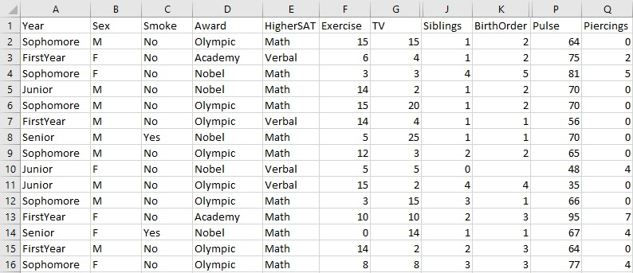

Understand and apply the vocabulary associated with statistics.
Distinguish between quantitative data and categorical data.
You may ask yourself, what is statistics? Statistics is the science of conducting studies to collect, organize, analyze and interpret data.
We are going to use an investigative approach to learning about statistics. We will look at different ways of collecting data (such as with surveys and questionnaires). We will organize the data with graphs and tables so we can see what the data tells us at a glance. We will describe the data with numerical summaries (known as statistics) and word descriptions. Later in the semester we will look at other ways to analyze data, such as finding intervals to predict a typical value and compare whether the sample is similar or different from previously known values.
The subjects/objects that we obtain information about are called the cases or units in a dataset. These are represented as the rows
A variable is any characteristic that is recorded for each case. The variables generally correspond to the columns in a data table.
A categorical variable divides the cases into groups, placing each case into exactly one of two or more categories.
A quantitative variable measures or records a numerical quantity for each case.
Data are the values or measurements the variables assume.
For example, what are the majors for the students in your class? The major is the variable since there are multiple responses from the students (such as math major, history major, education, nursing, biology major). Other variables you can ask students in your class are their grade level (freshman, sophomore, junior, senior) and the number of credit hours taken this semester. If we asked the students (case) in class, there will be lots of different majors (data).
There are two key terms we use to distinguish the groups we collect data from:
The population is the set of all subjects in the study.
A sample is a group or subset of subjects selected from the population.
If we asked ALL residents of the state of Colorado where they were born, then the Colorado residents would be the population. But if we asked just some people from a single city in the state of Colorado, they would a sample from the state.
There are two main branches of statistics that we are interested in.
In descriptive statistics the statistician tries to describe a situation. It consists of collecting, organizing, summarizing and presenting the data.
While with inferential statistics the statisticians make inferences from samples to make predictions about the population. It consists of generalizing data from samples, performing estimations and hypothesis testing, determining relationships among variables, and making predictions.
Subsection1.2.1Student Survey
Students in past semesters completed a survey in introductory statistics courses. The entire Student Survey Dataset 1
external/StudentSurvey.csv
is a comma-separated values document that includes responses from 362 students on the following 17 variables.
Year: Year in school
Sex: F=female or M=male
Smoke: Smoker? No or Yes
Award: Preferred award, Academy, Nobel, or Olympic
HigherSAT: Which SAT is higher? Math or Verbal
Exercise: Hours of exercise per week
TV: Hours of TV viewing per week
Height: Height (in inches)
Weight: Weight (in pounds)
Siblings: Number of siblings
BirthOrder: Birth order, 1=oldest
VerbalSAT: Verbal SAT score
MathSAT: Math SAT scorer
SAT: Combined Verbal + Math SAT
GPA: College grade point average
Pulse: Pulse rate (beats per minute)
Piercings: Number of body piercings
Here is the first 15 entries of the dataset:

Figure1.2.1.15 Student Responses
Answer the following questions about the first 15 entries of the dataset.
Checkpoint1.2.2.Rows of Data.
What does each row represent?
Each row is a list of responses by a student.
Correct. Each row is a student response.
Each row is a list of responses of a case.
Well done. a "case" is a survey-taker and is an important vocabulary word to know.
Each row is the list of responses of students on a single item of the survey.
Rethink your selection. Responses on a single item are listed vertically.
Each row is a variable.
The entries of a row do vary, but they do not represent different responses on a single survey item.
Checkpoint1.2.3.Columns of Data.
What does each column represent?
Each column is the list of responses of students on a single item of the survey.
Correct. Columns are the item responses.
Each column is a variable.
Well done. A "variable" is the responses of a survey item and is an important vocabulary word to know.
Each column is a list of responses by a student.
No. When you read down the column, the list is not the responses of a single student.
Each column is a list of responses of a case.
Rethink your selection. A "case" is a survey-taker.
Checkpoint1.2.4.I’d like to thank the Academy.
How many students student in this list prefer to win an Academy Award?
Hint.
The variable "Award" records students’preferred award: Academy Award, Nobel Prize, or Olympic Medal
Checkpoint1.2.5.Characteristics of a Case.
Which of the following are true about the student on this list who reported viewing the most hours of TV per week?
The student is a senior.
Correct.
The student has a younger sibling.
Well done. We know the student has a sibling and is the first born, so the sibling must be younger.
The student prefers to win an Nobel Prize.
Yes!
The student has a pulse rate of 65 bpm.
Be careful reading across the row.
Checkpoint1.2.6.Piercings.
What percentage of students on the list have piercings?
Hint.
The percentage is the number of students with piercings out of the total number